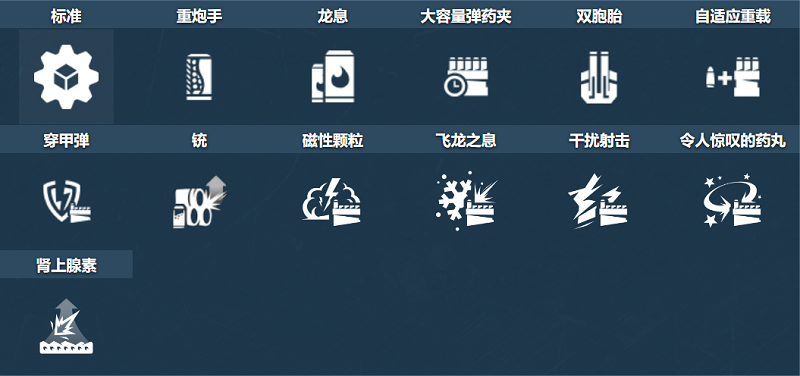
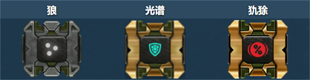
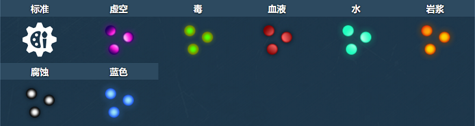
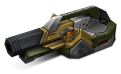

概括
当开发人员决定将霰弹枪和坦克的特性混合在一起时，滑膛炮就是由此产生的炮塔。
它能够使用三发子弹，威力与雷暴炮相当，装弹速度与轰天炮差不多。
然而，这是有代价的：在上述三发之后，炮塔需要大量的时间重新装填，
并且每次射击的效果仅取决于击中目标的弹丸数量（总共有 9 个）
只要用户有一个不错的目标，滑膛炮就有可能在近距离内造成巨大的伤害。
请记住，弹丸散布不鼓励使用该炮塔进行远程战斗。
车库中的描述
短程炮塔。使用弹片，一次弹射并伤害多个敌人。有一个用于三枪的圆形气缸。
工程师选择使用非正统的方法来制造这个炮塔。
它没有使用穿甲弹，而是使用带有钨箭的弹片弹丸，
并且其重新加载系统被替换为机器人气缸，与左轮手枪不同。
最终结果是一种将坦克钉入地下的可靠工具。
剩下的唯一一件事就是让玩家靠近敌人，因为炮塔的炮弹在很长的距离上传播得太多。
其钨箭的高密度使得子弹可以跳弹一次。
通常，让敌人躲在角落里或从侧面向敌人开火就足够了。
不过要小心，因为您也可以将子弹弹回自己体内。
装备改造

防御模块

射击效果

皮肤
滑膛炮标准

滑膛炮 XT